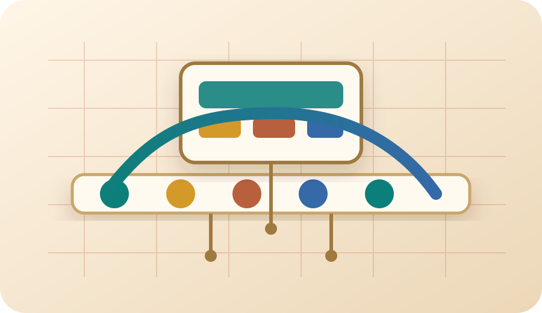
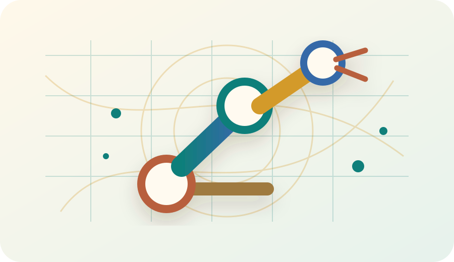
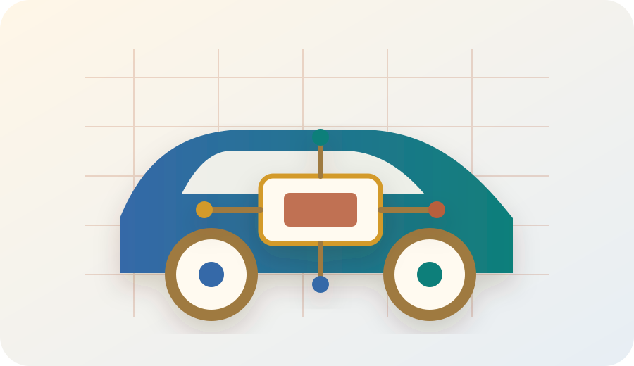

Projects
Protected project materials
Project slides, demo media, technical photos, notes, and selected engineering artifacts are provided through a separate protected area.
Project directions
Choose an engineering direction

Industrial & Automation
Process control, test benches, fixtures, and industrial systems.

Robotics & Simulation
Robotic subsystems, ROS 2, simulation, digital twins, and validation scenes.

Automotive & Embedded Systems